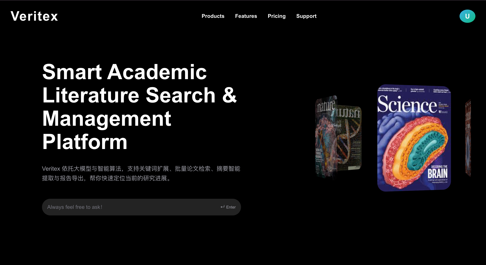
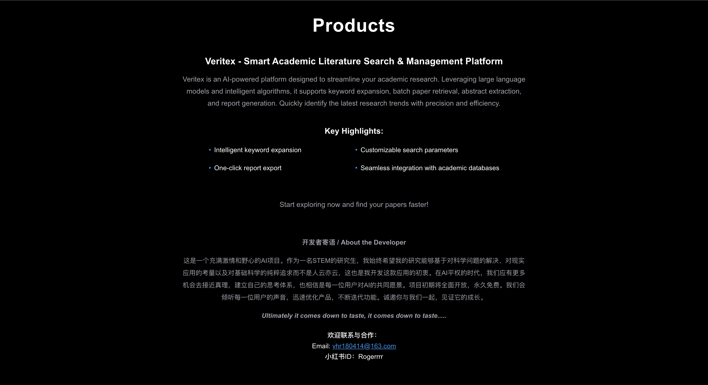
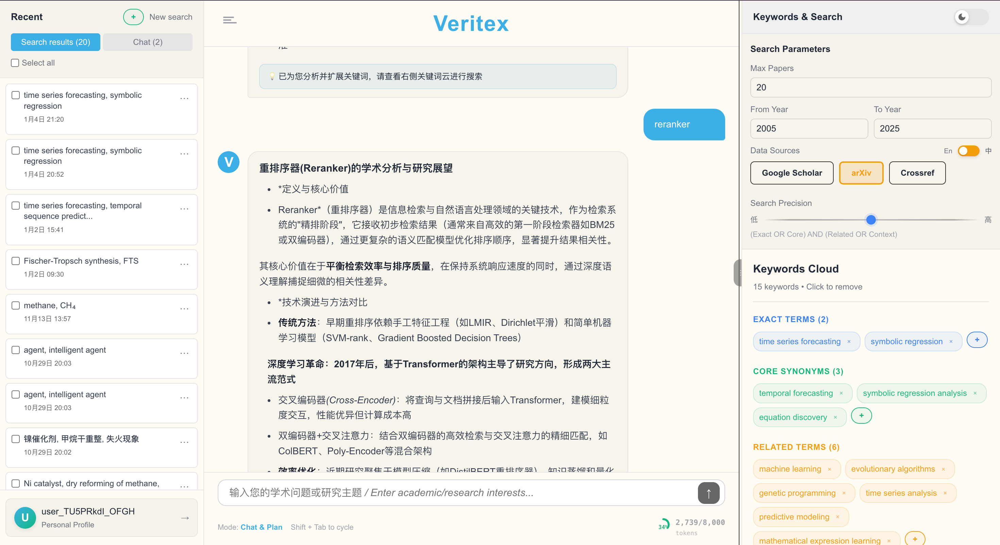
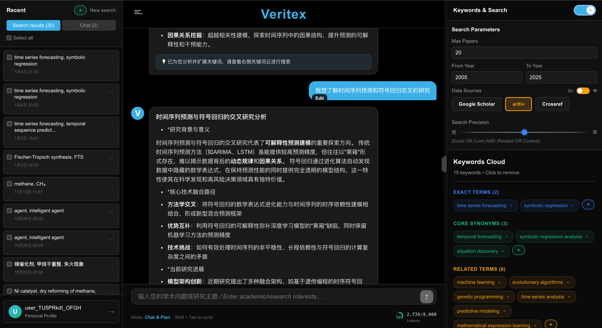
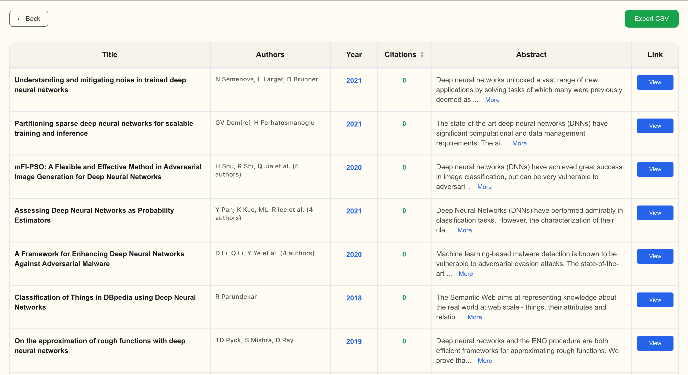

Veritex
Veritex is a literature search prototype built around a researcher's question. It combines conversational input with intent parsing, query expansion and ranking across sources, so a user can inspect relevant papers and refine a search.
Interface





How it works
- Interpret the question: identify the concepts and constraints a researcher means to investigate.
- Expand the search: include related terms and domain language that a literal keyword search can miss.
- Combine results: bring records from multiple sources into a comparable format.
- Rank and inspect: surface relevant papers while preserving links to their original records.
Research connection
The prototype taught me to treat retrieved papers as evidence with provenance. A useful research agent should let a scientist trace claims back to the source and see what the search may have missed.